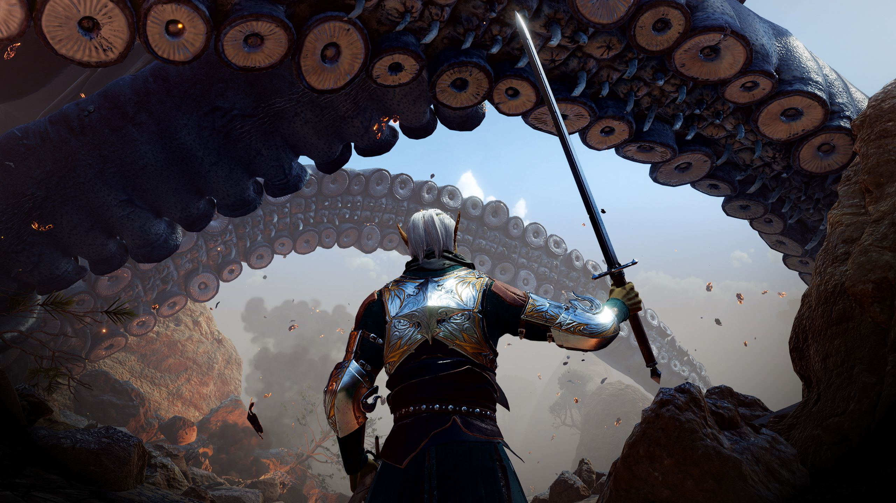
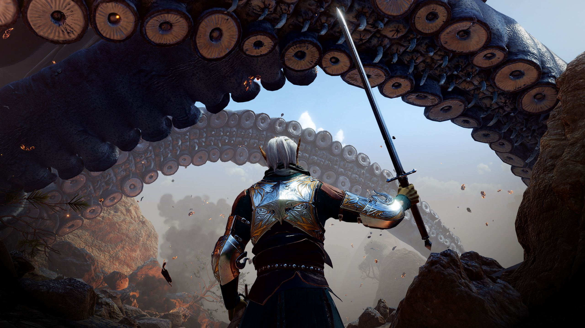

About
Baldur's Gate is a fantasy role-playing video game developed by BioWare and published in 1998 by Interplay Entertainment. It is the first game in the Baldur's Gate series and takes place in the Forgotten Realms, a high fantasy campaign setting, using a modified version of the Advanced Dungeons & Dragons (AD&D) 2nd edition rules. It was the first game to use the Infinity Engine for its graphics.
The game's story focuses on players controlling a protagonist of their own creation who finds themselves travelling across the Sword Coast alongside a party of companions, to unravel the mystery surrounding a sudden iron crisis affecting the region and attempting to discover the culprits behind it, while uncovering dark secrets about their origins and dealing with attempts on their life.
Baldur's Gate was the first game to use the Infinity Engine, which was developed by BioWare to allow for the real-time implementation of AD&D rules. The game was both a commercial and critical success, and it was followed by an expansion pack, Tales of the Sword Coast, in 1999. The game has received universal acclaim from critics, who praised the game's story, art, and audio. It was also a commercial success, with over 2 million copies sold, and its success led to a sequel, Baldur's Gate II: Shadows of Amn, in 2000.
 
